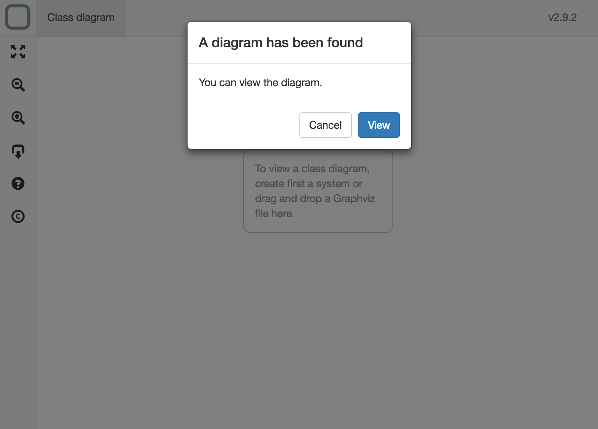

Export a System
Version compatibility
This feature is only available on the Windows, macOS, Linux and PWA versions of System Designer.
You can export your system in many formats.
Exportation
To export a system just click on the export button (the icon with a square and an arrow to the bottom). You will able to export the system to:
Export to JSON
When exporting a system to a JSON file you will able to import it in System Designer later or merge it to another system.
You can also install it in a client-side or server-side application.
What is the 'Core system' option?
A system can be composed of another systems. It means that all schemas, models, behaviors and components of many systems can be merged in one system. We call the core system, the system in which we will merge other systems at runtime. So when exporting, you can set a system as Core system.
Use this JSON in a HTML file
- create a valid HTML file
- copy the JSON file you get from the export near your HTML file
- then install the file with a link tag:
<link rel="system" type="application/json" href="mysystem.json">
- add this script tag to install System Runtime:
<script src="https://cdn.jsdelivr.net/npm/system-runtime@3.2.0/dist/system-runtime.min.js"></script>
What will happen?
System Runtime will install the system on the load of the page.
Example:
<!DOCTYPE html>
<html>
<head>
<title>App</title>
<meta charset="UTF-8">
<meta name="viewport" content="width=device-width, initial-scale=1.0">
<link rel="system" type="application/json" href="mysystem.json">
</head>
<body>
<script src="https://cdn.jsdelivr.net/npm/system-runtime@3.2.0/dist/system-runtime.min.js"></script>
</body>
</html>
How to change the log level?
By default the log level is at warning level, to change that, just add the property level on the script tag.
Example:
<script level="info" src="https://cdn.jsdelivr.net/npm/system-runtime@3.2.0/dist/system-runtime.min.js"></script>
Use this JSON on a server application
First, you need to install System Runtime server-side:
npm install system-runtime --save
Want to know more about Node?
System Runtime is available as a node package. To learn mode about Node, go to this webpage.
Copy the JSON file you get from the export in your project. Create a new file (mysystem.js for example) and call the install method of runtime:
const runtime = require('system-runtime');
// install and start the system
runtime.install('mysystem.json');
Now execute your file:
node mysystem.js
System Runtime will install the system and run it.
Use this JSON in a web application
- copy the JSON file you get from the export into your existing web application
- add System Runtime to your application:
npm i system-runtime --save
- import it in your application:
import runtime from 'system-runtime';
- import your system:
import system from './mysystem';
- then in your script, install your system:
// set the level of log to see the logs
runtime.require('logger').level('info');
// install and run the system
runtime.install(system);
Export to JavaScript
When exporting a system to a JavaScript file you will able to run it client-side and server-side.
Use this JavaScript on a client application
- create a valid HTML file
- add this script tag to install System Runtime:
<script src="https://cdn.jsdelivr.net/npm/system-runtime@3.2.0/dist/system-runtime.min.js"></script>
- copy the JavaScript file you get from the export near your HTML file
- then install the file with a script tag:
<script src="mysystem.js"></script>
Example:
<!DOCTYPE html>
<html>
<head>
<title>App</title>
<meta charset="UTF-8">
<meta name="viewport" content="width=device-width, initial-scale=1.0">
</head>
<body>
<script src="https://cdn.jsdelivr.net/npm/system-runtime@3.2.0/dist/system-runtime.min.js"></script>
<script src="mysytem.js"></script>
</body>
</html>
Use this JavaScript on a server application
First, you need to install System Runtime server-side:
npm install system-runtime --save
Open the exported script and uncomment this line:
const runtime = require('system-runtime');
Now execute your file:
node mysystem.js
Export to HTML
If you choose HTML type of exportation, your system will be packaged in a HTML file. You will just need to open the exported webpage with a browser to execute your system.
Export to Node.js
If you choose Node.js type of exportation, your system will be packaged in a Javascript file ready to be used in Node.
To execute it, you need first to install System Runtime server-side:
npm install system-runtime --save
Then execute your file:
node mysystem.js
Export to Graphviz
If you choose Graphviz type of exportation, your system will be packaged in a DOT file. You will be able then to edit it and open it with all diagram tools that can open this kind of file.
You can preview the diagram of an external DOT file by dropping it in the Class Diagram viewer.
